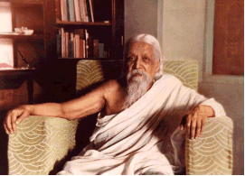

Wat we allemaal kennen van de Psychologie is dat
het vooral onderzoek en toepassing van kennis van het 'innerlijke
leven' betreft. Ook, of zelfs vooral (behaviorisme),
het gedrag van biologische wezens en de mens in het
bijzonder, is het terrein van zowel onderzoek als toepassing van
wat we psychologie noemen.
Sinds Carl Gustav Jung in 1931 al schreef over
'Psychologie zonder
Ziel' (in zijn essay
"Das Grundproblem der gegenwärtigen Psychologie") is er niet
veel veranderd, behalve dan dat vanuit de toevoeging van onderzoek
vanuit cognitie en de curatieve psychotherapie als toepassing tot
een rijker en breder toepassingsgebied is gekomen, maar altijd nog
beperkt tot het brein. En dat is extra interessant als je weet dat
het woord psychologie 'zielkunde' betekent, en dus een hartzaak
is...
In de jaren 40 is vanuit vooral de Oosterse
religies een aantal pogingen gedaan om de psychologie een meer
holistisch onderzoeks- en toepassingsterrein te bieden. Sri
Aurobindo ontwikkelde de 'integrale yogische psychologie' als een
resultaat van de vereniging van spirituele praktijken met de
psychologie van Freud en Jung.

In de jaren 70 zag de Tibetaanse boeddhistische
leraar Chögyam Trungpa Rinpoche de taal van de psychologie (ego, neurose, angst,
depressie, onbewuste gedachte patronen) als een prima overeenkomst
om de boeddhistische leer (niet religie) in het Westen over te
brengen. Vanaf 1974 ontwikkelde Trungpa Rinpoche samen met
psychiaters, psychologen en therapeuten de zogenaamde
Contemplatieve Psychologie. In Nederland is de
zogenaamde Contemplatieve
Psychologie vooral
bekend door Han de Wit en Karuna Nederland in
Amsterdam.
In dit boek doel ik met de
term Integrale
Psychologie op een allesomvattende, holistische visie
en benadering in
plaats van (in welke mate dan ook) exclusieve en/of beperkte
'specialistische' benadering en/of toepassing, inclusief het
onderscheid tussen Psychologie en Psychiatrie. Elk van de thans
(2014) officieel bekende en gehanteerde 28 verschillende takken van
psychologie (incl. bio-, somatische-, religie-, leer-, sociale-,
organisatie- etc. etc. psychologie) vallen binnen Integrale
Psychologie. Het Hartmens™ model als geheel geeft bij
benadering een overzicht van wat er altijd dynamisch en in bepaalde
specifieke contexten onder Integrale Psychologie valt; kan vallen.
Voor de slag naar wat je er verder 'praktisch' mee zou kunnen en/of
moeten sluit ik me hier graag aan bij de woorden van Han de Wit*
die de beste uitleg zijn van waar ik op doel. Han zegt:
'Perceptuele kennis maakt
geen onderdeel uit van wat we gewoonlijk psychologische kennis
noemen, want die laatste kennis is conceptueel. Alle grote
religieuze tradities bevatten inzichten die we tegenwoordig
psychologisch zouden noemen. Ze spreken net als in de psychologie
over emoties, motivatie, denken, waarnemen en
bewustzijn', legt De
Wit uit. 'Als je die
inzichten bij elkaar veegt, ontdaan van hun religieuze context, dan
heb je een eigensoortige psychologie in handen. Ik heb haar
contemplatieve psychologie genoemd. Met de term contemplatie wordt
oorspronkelijk het onbevangen schouwen, observeren, introspecteren
van onze ‘mentale empirie’ aangeduid. Alle grote
religies bezitten wel iets van een contemplatieve psychologie, maar
vooral bij het boeddhisme is dat het geval, omdat deze religie geen
godsdienst is: ze is niet op het aangaan of het onderhouden van een
relatie met een God gericht, maar op het cultiveren van de
menselijke geest. Daartoe moeten we de aard van de menselijke geest
wel kennen en dat betekent dat we hem moeten kunnen onderzoeken.
Omdat het boeddhisme daarvoor een betrouwbare methode van
introspectie heeft in de vorm van inzichtmeditatie (Sanskriet:
vipashyana) bevat het daardoor ook een rijke contemplatieve
psychologie.'"
Er is nog een verschil met de traditionele
wetenschap. Want meditatie of introspectie levert geen traditionele
wetenschappelijke kennis op. Het is geen conceptuele kennis die je
in handboeken kunt zetten en via begrippen kunt overdragen op
anderen. Je moet het zelf ervaren en kunt een ander helpen het
eveneens zelf te ervaren.
Overigens is het woord psychologie een
samenstelling uit het Griekse ψυχή
(psychè), ziel, geest en λόγος
(logos) woord, gedachte, rede, vlees ofwel 'vleesgeworden geest' en
die definitie van de mens klopt uitstekend
met Hartmensen.
________________________________________________
* In het blad ‘De Psycholoog, November
2007